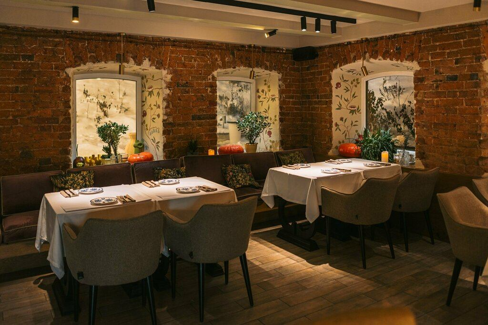

«Нино» — в старинном доме на улице Карла Маркса, прямо у набережной.
Внутри — кирпичные стены, расписные окна и белые скатерти.
Летом у дома работает веранда под гирляндами.
- Летняя веранда
- Можно с собакой
- Парковка
- Детское меню

Хинкали и вино
Хинкали, хачапури, шашлыки и люля — в старинном здании на набережной.
Карла Маркса, 2А
«Нино» — в старинном доме на улице Карла Маркса, прямо у набережной.
Внутри — кирпичные стены, расписные окна и белые скатерти.
Летом у дома работает веранда под гирляндами.
От классических с телятиной и свининой до хинкали с креветками и страчателлой.
«Поразило, что скатерти и салфетки тканевые» — из отзыва гостя.
Под гирляндами, у старинного дома на набережной.
Детское меню и детские мини-хинкали.
Кофе с собой, еда навынос, доставка, подарочный сертификат.
Контакты
Екатеринбург, ул. Карла Маркса, 2А
Метро «Геологическая» — 530 м · есть парковка